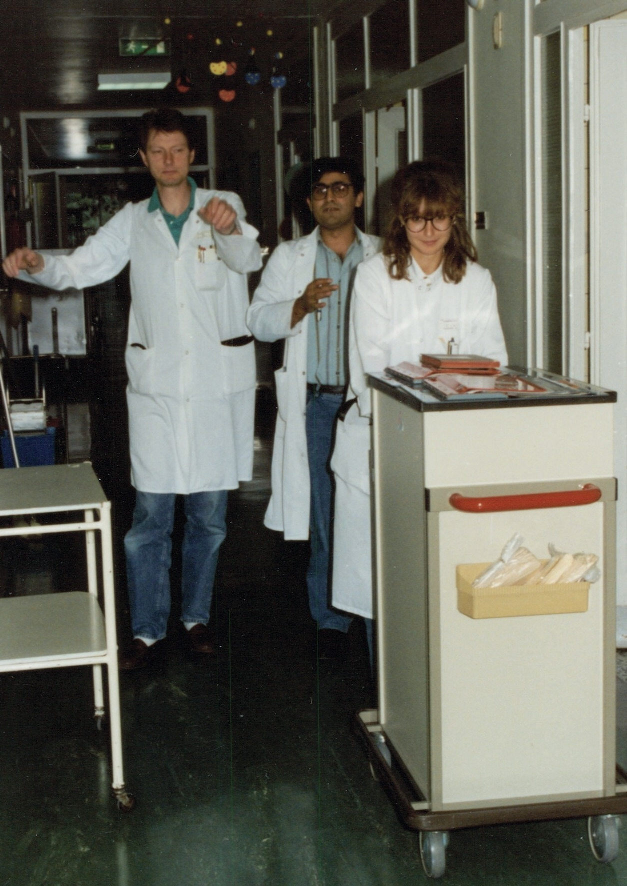

Katja Becker
Kurze Ausbildungsstation in der Pädiatrie, wissenschaftlich hellwach, später DFG-Präsidentin.
Ursula Felderkamp-Müser
Junge Kollegin in Heidelberg, später selbst Klinikdirektorin.
Dieter Haffner
Stichworte folgen.
Musa Kockaya
Über meine Freundschaft mit Musa Kockaya habe ich bereits im Kapitel H7 berichtet. Musa war zusammen mit Prof. Bremer aus Düsseldorf nach Heidelberg gekommen. Er war in Deutschland geboren, seine Eltern stammten aus der Türkei. Sie lebten in einfachen Verhältnissen und waren super stolz auf ihren Sohn, der es beruflich so weit gebracht hatte.
Zwischen Musa und mir bestand eine stillschweigende Übereinkunft, die Widrigkeiten und Belastungen des Daseins als junge Assistenzärzte mit Humor zu bewältigen, vorzugsweise mit tiefschwarzem. Das half meistens. Allerdings brauchten wir nicht unbedingt irgendwelche Widrigkeiten, um guter Laune zu sein. Das ging auch ganz ohne besonderen Anlass. Wenn die Chef- und Oberärzte gerade nicht so genau hinschauten, summten wir schon mal ein Liedchen und legten auf dem Klinikflur ein kleines Tänzchen hin. Das Foto zeigt uns bei einer solchen Gelegenheit. Die junge Dame rechts war eine Medizinstudentin, die offenbar einigermaßen verwundert, aber durchaus amüsiert darüber war, was sich in einer Universitätsklinik so alles abspielen konnte. Musa und ich mussten im Rahmen unserer Facharztausbildung durch verschiedene Stationen rotieren und fanden uns dabei immer wieder auf derselben Station zusammen. So auch hier, auf der Infektstation C. Die Arbeit war nicht immer lustig. Wir schon. Oder zumindest meistens.

Emy Koen-Emge
Klinische Anpassung, Opportunismus und eine schwierige Kollegin.
Jürgen Magsaam
Intensivstation, Galgenhumor, Marburg und ein tragisches Ende.
Ertan Mayatepek
Junger Assistent, wissenschaftlich interessiert, später Chef in Düsseldorf.
Karl Paul
Altassistent, Freak, Rockmusik im Zimmer und kein Schleimer.
Uwe Querfeld
Rückkehrer aus Los Angeles, Frustgenosse und später Charité-Ordinarius.
Dieter Sontheimer
Sonnyboy, Laborzettel und die Medizin einer anderen Zeit.